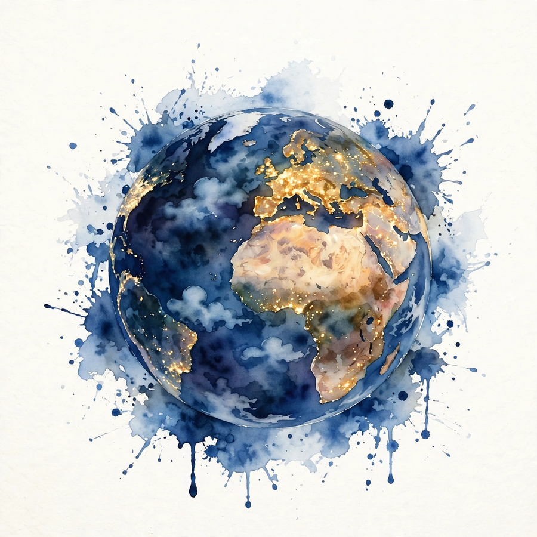

Acquired · Episode 7 · Companion
Meta
Four billion monthly users, half of humanity. The growth discipline Facebook invented, the mobile transition that nearly killed it, the acquisition playbook from a 2012 email, and the $60 billion hedge. This companion follows the episode chapter by chapter.
Listen. The official Acquired episode audio (about 6 hr). Times below are proportional estimates from the transcript, which carries no timestamps.
Source fact A claim from the episode transcript. Interpretation My read on what it means. Times marked ~ are proportional estimates from word position, since the transcript has no timestamps.


Half of Humanity
Source fact Ben opens with the numbers because nothing else frames it. Meta has 4 billion monthly active users, and daily active users are over 3 billion. There are only 8 billion humans on Earth. The Roman Empire at its peak reached only 40 percent of humans, and the British Empire about 23 percent, though the data from those periods is hard to pin down. No government, no religion, no company has ever addressed this share of the species.
Share of the species
Peak share of all humans reached. Hover for detail.
Source: Acquired, Meta, ~00:02. Empires per the episode. Meta per company reporting.
The Kid: Civilization, Code, Classics

Source fact Mark Elliot Zuckerberg was born in May 1984 in Dobbs Ferry, New York, the second of four children. His mother Karen is a psychologist. His father Ed, the son of Jewish immigrants, studied dentistry at NYU and practiced as a dentist. A classic American leveling-up story: grandparents sacrificed, parents became professionals, the kids got to explore.
Mark's three passions, in order: turn-based strategy games, programming, and ancient Greek and Latin. Civilization, released in September 1991 when he was 7, defined the 4X genre: explore, expand, exploit, exterminate. The episode keeps returning to it: the turn-based strategist who gets more turns and learns more per turn is the same kid who later ran Meta as a turn-based strategy game.
Harvard, fall 2003. Sophomore year, Kirkland House suite H33: Zuckerberg, Chris Hughes, Dustin Moskovitz, and Billy Olsen. Mark built Facemash, then thefacebook.com in February 2004. Eduardo Saverin, a fraternity brother in the investing club, put in $1,000 for servers. Mark added $1,000. The split: Mark two-thirds, Eduardo one-third.
From $2,000 to $104 Billion
Source fact The angel round: Peter Thiel led $500,000 at a $5 million pre-money valuation ($5.5 million post). Reid Hoffman and Mark Pincus each put in $37,500. Then $600,000 of venture debt from Western Technology Investment, with warrants the episode calls the greatest venture debt deal of all time. Series A, spring 2005: Accel led $12.7 million at a $98 million post-money valuation, wild for the time, with Mark keeping board control and selling under 20 percent when the norm was 25 to 30 percent. Jim Breyer personally put in $1.1 million at 4.5 cents a share. At $600 a share that is a 13,000x return. The round was supposed to be Don Graham of the Washington Post at $60 million. Accel topped it, and $3 million went to Mark, Dustin, and Sean as a secondary.
Sean Parker's fingerprints are on the early company: he negotiated the facebook.com domain purchase for $200,000, a huge chunk of the angel money. In 2007, Microsoft invested $240 million at a $15 billion valuation, with an ad partnership making Microsoft the exclusive third-party ad network worldwide, thirteen months after the failed $1 billion Yahoo bid. The $240 million later became $8 billion. The IPO priced at $38, the top of the range, raising $16 billion at a $104 billion market cap.
The funding ladder
Valuation at each step, $ millions (log scale). Hover for detail.
Source: Acquired, Meta, ~00:44. From founders’ $2K to the $104B IPO.
The Growth Machine
Source fact By November 2005, Facebook hit 230 million daily page views, passing Google, a company started six years earlier. Two product earthquakes defined the era. News Feed launched September 5, 2006, to everyone at once, no opt-in. Users hated it: 30,000 angry support emails on day one, and 10 percent of the entire user base joined a protest group. It was a total paradigm shift. Social networks were profiles you visited. Now the updates came to you. The episode's verdict: users always hate the change, then cannot live without it.
Platform launched at f8 on May 24, 2007: apps inside Facebook, natively, part of Mark's original 2005 product roadmap. For four years (2007-2011), platform was the company's core belief about the future. FarmVille and Zynga rode it to hundreds of millions of users.
Beacon: The Failure That Built the Ads Business
Source fact Mark thought ads were gross and wanted to outsource monetization to Microsoft while he focused on product. But Facebook also tried its own "native" ad idea: Beacon, led by Chamath Palihapitiya. Advertisers embedded JavaScript that published your off-Facebook purchases into your friends' News Feeds. A diamond ring purchase could spoil an engagement. Users revolted, advertisers were confused about what was even an ad, and credibility burned everywhere.
The failure was productive. Mark's takeaway: maybe he did not understand advertising as well as he thought. Enter Sheryl Sandberg, who joined Google in 2001 as AdWords took shape and built its self-serve business. The deal: Mark owns product and engineering. Sheryl owns ads and operations. Their first exercise: should Facebook even be in the ads business? Answer: yes, it is a media business, and it should build the best targeting engine in the world, which its social data uniquely enables.
The Growth Team: A Discipline Is Invented
Source fact After Beacon, Chamath needed a new job. At most companies he would lose his job. Facebook's "move fast and break things" culture found him the right seat instead. User growth stalled, and Chamath built the first growth team in the industry's history: himself, Alex Schultz, Naomi Gleit, and Javi Olivan. Growth is not marketing. Marketing and product both touch customers but never talk to each other. The growth team unified them inside product, on the principle that the product itself is the best growth lever.
Their methods: obsessive analytics to find where users got value and where they got confused. Crowdsourced translation, which seeded power users who felt ownership and captured local nuance no agency could. People You May Know, still a core surface. The famous finding: a new user's odds of becoming engaged tracked how many friends they added in the first day or two. Alex Schultz's gloss: it is linear, not magic. More friends faster is just better.
Results: 100 million users in August 2008 to 150 million by year end, 50 percent growth in four months, then 250 percent in 2009 to 350 million. Revenue: $280 million (2008), about $800 million (2009), $2 billion (2010), $3.7 billion (2011). Users: 600 million (2010), 850 million (2011).
The growth-team years
Users in millions. Hover for detail.
Source: Acquired, Meta, ~02:50.
The Mobile Crisis: Five Ways to Die
Source fact By 2011, everything Facebook had built assumed the open web. Mobile broke every assumption, in five ways. One, closed platforms: iOS and Android are proprietary ecosystems Facebook does not control, while the web was the only open platform in history. Two, platform dies: apps cannot run inside apps on mobile, so Facebook Platform, half the company's imagined future value, switches off permanently. Three, no mobile revenue: the S1 admitted it, and the hosts read the line as a quote: we do not currently directly generate any meaningful revenue from the use of Facebook mobile products
. Desktop ads lived in the right-hand column. Phones have no right-hand column, only the feed, which had never carried ads. Four, no code velocity: on the web, push anytime. On mobile, a two-week App Store review, and Apple can reject you. Five, competitive reset: on the web, Facebook absorbed every new social mechanic. On mobile, it is one icon among many, and single-purpose apps peel off use cases.
The platform war had a human prologue. Mark and Steve Jobs had a genuine relationship: Jobs reached out in 2007, and in 2008 Facebook pitched bringing its platform into iOS. The answer was cordial and final: Apple would not let somebody else build a platform on top of its platform.
The IPO and the Underwater Years
Source fact They went public into the crisis. The IPO priced at $38, top of the range, raising $16 billion at a $104 billion market cap. Nine days earlier, during the quiet period, Facebook bought Instagram for $1 billion, its previous largest acquisition having been $70 million. The stock closed day one at $38.23 only because the underwriting banks bought to support it. It fell 9 of the next 13 sessions, bottomed at $17.68 on September 4, 2012, down 53.5 percent, and stayed underwater for 16 months. Anyone who bought at the IPO lost half their money within five months.
The turnaround: a full native rewrite, then the invention that saved the company, honest-to-God native ads in the News Feed, built under the project name Whale Shark, plus app-install ads, which made Facebook the front end for App Store discovery. Q4 2013 earnings popped the stock 75 percent above the IPO price, to about $175 billion.
The underwater years
Stock price around the IPO. Hover for detail.
Source: Acquired, Meta, ~03:28. Fell 9 of the first 13 sessions.
The Acquisition Playbook: Buying Time

Source fact In 2013, Facebook bought Onavo, an Israeli VPN and data-compression app. It let Facebook see mobile app usage trends the way Apple and Google could, and it tipped them off to WhatsApp and Snap. Mark's actual strategy surfaced in a February 28, 2012 email to his CFO, revealed in court. The plan: buy companies, keep them running independently, and integrate the social mechanics they invented into Facebook's core products over 12 to 24 months. What we're really buying is time.
Network effects plus a finite number of social mechanics to invent: once someone wins a mechanic, others cannot supplant them without something different. Buy the mechanic, deploy it at your scale before anyone else can, and you win whether the original product or your copy wins. Usually both win.
Instagram ($1 billion, April 2012): the mechanic was filtered photo sharing. WhatsApp ($19 billion, February 2014): not a competitor, a different use case, private messaging, the living-room shift. Oculus ($2 billion, March 2014, 34 days after WhatsApp): a research lab for the next platform, the way FAIR was for AI. Snapchat would not sell, so Facebook copied Stories, and the copy was better in one specific way: Instagram launched Stories as an algorithmically ranked row of faces, powered by the News Feed ranking expertise Snap did not have. Copying well means deploying the mechanic with your superior distribution and algorithms.
Town Square to Private Rooms

Source fact Mark's 2019 strategic frame: social shifted from the Town Square, public, permanent, performative, the classic Facebook feed and early Instagram, to the private room, small, private, ephemeral, messaging, Stories, groups. As the town square stage got bigger, people only took it for major announcements. Sharing moved private. In the early 2010s, Facebook answered the breakout single-purpose apps by copying them, building a constellation of its own: Slingshot, Poke, Messenger, Paper, Rooms, Riff, Camera. The strategy contradicted Facebook's own value, which came from bundling use cases so they compound. The constellation asked users to unbundle Facebook itself.
The second-order effect nobody predicted: once social moves to private rooms, media can divorce from social entirely. TikTok is not social media. It is media. Your graph does not matter. The AI does. In your first ten videos, the algorithm learns what engages you, and none of it comes from friends. Facebook's durable advantage, the authenticated network, became irrelevant to the engagement at hand. All that was left was the habit of tapping the app, and habits break. TikTok also broke the organizational model: ByteDance is an AI company that ships products as deployment vectors for its AI, organized around centers of excellence. Meta reorganized to look like ByteDance.
The response: Reels, built fast enough to stem the bleeding, aiming for stalemate. It worked because of FAIR. The episode's line: the AI lab made the counterattack possible.
FAIR: The Profitable AI Lab
Source fact In 2013, with mobile finally stabilizing, Mark and Mike Schroepfer asked when the tiger would jump next. They started FAIR (Facebook AI Research) by recruiting Yann LeCun in summer 2013. LeCun's terms: stay in New York, keep teaching at NYU, publish everything. Facebook, built on the LAMP stack and already open-sourcing Cassandra and React, said yes to all of it. The key design choice: focused research, not blue-sky. The mission was explicit: AI that ships into products. It paid off in two years, not ten. The payoffs: immediate, wildly profitable application to feed ranking and ad targeting, since every improvement makes ads and engagement more valuable. It is a chess piece for whatever platform comes next. It is also the weapon against TikTok: Reels.
2016-2018: The Fall
Source fact Content moderation at planetary scale broke the company politically. Then the 2016 election and Cambridge Analytica. The episode reconstructs what happened, carefully. A quiz app harvested profile data under the old permissive platform API: authorizing an app exposed your data and your friends' data. The developer violated terms of service by keeping and repurposing it. About 320,000 people took the quiz. The surface area reached 87 million profiles. Cambridge Analytica got derivative psychographic labels, not raw Facebook data. Facebook demanded deletion in 2015. The UK investigation was skeptical the methodology even worked, with internal communications showing doubt about the models' real-world accuracy.
The brand impact dwarfed the facts. Hundreds of millions of people believed Facebook data had swung the election. The episode's diagnosis: Facebook earned the distrust through years of prioritizing growth over caution, and the town-square-to-living-room shift made old permissiveness look grotesque through new expectations. The FTC settlement: $5 billion and 20 years of monitoring. In July 2018, the privacy-focused earnings call wiped $119 billion in a day, the largest single-day loss in history at the time.
Apple: The Platform War
Source fact Apple then did what platforms do. In 2021, iOS 14.5 and 14.6 shipped App Tracking Transparency: apps must ask permission to track, in aggressive language. Most users said no. Facebook's off-app targeting picture collapsed. In February 2022, Meta said ATT would cost about $10 billion in 2022 revenue. The stock fell 26 percent in a day, losing $232 billion, a new record. It was also the first quarter-over-quarter user decline, with TikTok compounding. By Halloween 2022, the stock was down 72 percent from February, after trading down 46 percent by April 27.
The episode's judgment: the real threat was TikTok (users), not ATT (monetization efficiency). A founder-led company reacted to both at once, cannibalizing its own feed revenue to push Reels while absorbing the ATT hit. A professional CEO would wait out ATT first. Mark could not be fired, so he did the right painful thing immediately. The stock is up roughly 5x from the bottom.
The aftermath vindicated scale: Meta built Advantage Plus on first-party signals, advertisers kept spending because budgets must go somewhere, and smaller competitors without Meta's data and engineers could not adapt at all. ATT destroyed value overall. The dollars did not move to Apple. Targeting just got worse for everyone.
Reality Labs: The $60 Billion Hedge
Source fact February 2014: $19 billion for WhatsApp. Thirty-four days later: $2 billion for Oculus. Mark tried the demo and found it the most credible future he had ever seen. Treat Oculus as a research lab purchase, like FAIR. Since 2019, Reality Labs has lost about $60 billion in reported operating losses.
The episode does the math two ways. The product math: to earn back $60 billion, Reality Labs must become the most successful consumer product in history. Napkin math: if Orion glasses launched tomorrow and grew exactly like the iPhone with an Apple-sized services business attached, Meta's cumulative Reality Labs cash flow stays negative until at least 2035. Anything less is incineration. The hedge math: Apple erased $10 billion of revenue with one policy change and could, in theory, remove Meta from the App Store entirely. Expected value of that risk, some small probability times a $1.5 trillion market cap, is still an enormous number. Spending $15-20 billion a year, about 1 percent of enterprise value, to buy a chance at platform independence is rational insurance. Plus the upside: owning the next platform means millions of developers building on you.
Toy: price your platform risk
The Reality Labs hedge as arithmetic. Set the chance a platform owner removes you and your company's value, and see what annual insurance spend the expected value justifies. Illustrative model.
The Business Today
Source fact The numbers at recording: 3.3 billion daily actives across the family of apps, up 7 percent year over year, about $12 revenue per person. Facebook alone: 2.1 billion daily, 3.1 billion monthly. WhatsApp and Instagram: about 2 billion monthly each. 2023: $135 billion revenue, $47 billion operating income (35 percent margin), $28 billion capex, a hyperscaler-sized data center footprint consumed internally. $50 billion cash ($58 billion with securities), 71,000 employees, $1.5 trillion market cap, up from $230 billion in October 2022.
Two observations the hosts find insane. First, every product's engagement grows over time: the growth function is a purpose-built heat-seeking missile of attention and metrics, a process, not a fluke. Second, monetization: US and Canada average revenue per user went from $11 at IPO to $227. Global is $44. Of 5.4 billion humans online per the UN, Meta serves 4 billion outside China.
The monetization missile: $11 to $227
US and Canada average revenue per user. Hover for detail.
Source: Acquired, Meta, ~05:06. Global ARPU: $44.
The episode in seven lines
- Half of humanity is the frame. Everything reads differently at that scale.
- Growth is a product discipline, not a marketing function.
- Ship the obvious ad format before the clever one.
- Confess the existential weakness in the S1. Then fix it.
- Acquisitions buy time. Name the mechanic and the integration clock.
- Watch where sharing moves. The square empties, the private rooms fill.
- Price platform risk as expected value. A 1 percent hedge is cheap.
Distilled from Acquired, Meta, Fall 2024. Full episode: youtube.com/watch?v=CS2Lqdwja8o. Times are proportional estimates from the transcript.
Outro
Source fact The episode closes with the sign-off, who got the truth, and the hosts' takeaways from six weeks of research with everyone involved.